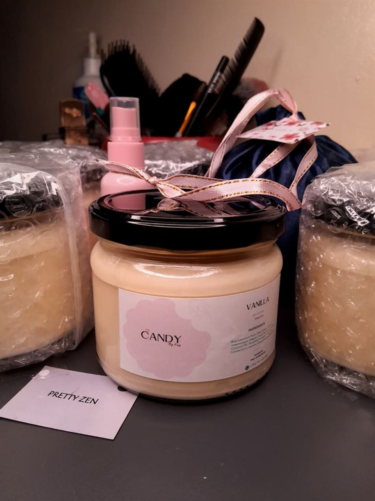
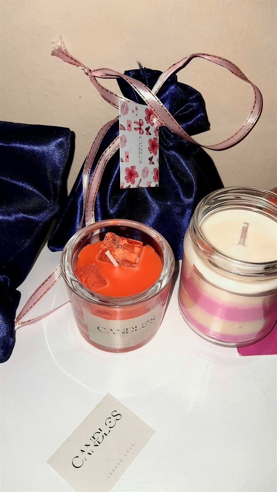
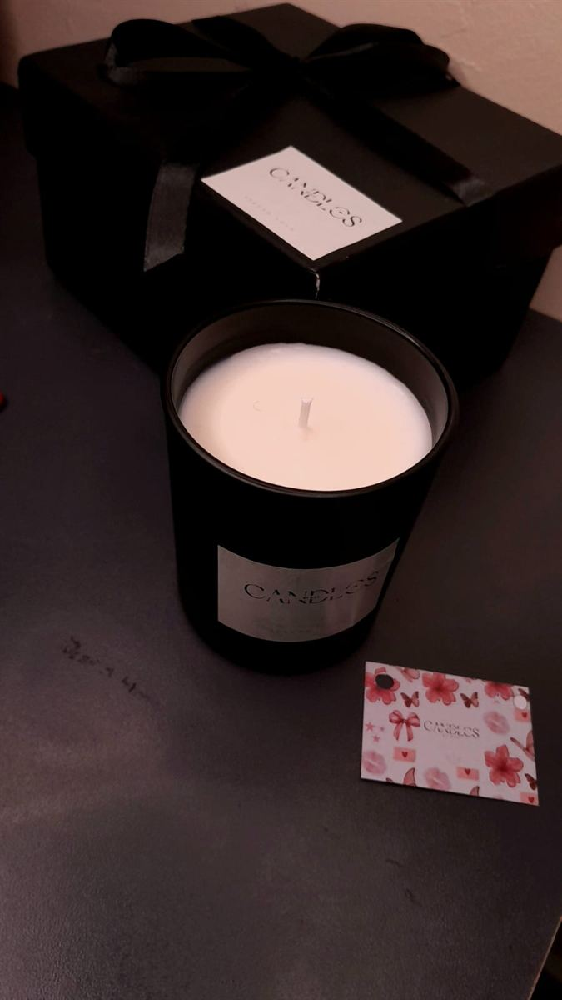

About Us
A Kenyan brand making body care and candles by hand, the honest way.
From one jar to a growing family of products
Kay's Authentik started with a simple goal: body care that feels like a treat and lists every ingredient on the label. That started with Candy by Kay, a light, whipped shea body butter made with oils from Kenyan trees.
Clients loved the butters, and a love for cosy, beautiful spaces led to Candles by Kay: hand-poured candles with a simple message, “Spread Love.” Our satin sleeping masks followed soon after, to complete the self-care routine.
Today we whip, pour, pack and deliver every order ourselves, from our home base in Kenya to clients across the country.



Everyday luxury, honestly made
To make self-care feel special and affordable for every Kenyan, using real ingredients, careful handwork and packaging that's a joy to receive.
We'd rather make a few things very well than many things quickly. Every jar is whipped by hand, every candle is poured in small batches, and every order is packed with care.
What you can count on
- Full ingredient list on every label: no hidden fillers.
- Unscented option: every body butter also comes fragrance-free for sensitive skin.
- Small-batch production: made fresh, not stored for months.
- Hand-checked and safely packed: bubble-wrapped glass jars for safe delivery.
- A real person on WhatsApp: ask us anything before you buy.
Ingredients we're proud of
The full list from our body butter label, with what each one does for your skin.
Shea Butter
Butyrospermum parkiiRich, creamy base that softens and protects dry skin.
Croton (Megalo) Oil
Croton megalocarpus seed oilA light oil from an indigenous East African tree that absorbs quickly and nourishes.
Cape Chestnut Oil
Calodendrum capense seed oilA traditional African beauty oil, prized for keeping skin smooth and even.
Coconut Oil
Cocos nuciferaLocks in moisture and leaves a soft, healthy glow.
Vitamin E
Tocopheryl acetateAn antioxidant that helps condition skin and keeps the butter fresh.
Let's talk
Bulk orders, gifting or a quick question? We'd love to hear from you.